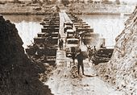

After the 1948 Arab-Israeli war, Lebanon became home to more than 110,000 Palestinian refugees, after their settlements in Palestine and Israel had been depopulated as a result of the war. After its founding in 1964 and the radicalization among Palestinians, which followed the Six-Day War, the PLO became a powerful force, then centred in Jordan. The large influx of Palestinians from Jordan after the Black September conflict caused an additional demographic imbalance within Lebanese society and its democratic institutions established earlier by the National Pact. By 1975, the refugees numbered more than 300,000 and the PLO in effect created an unofficial state-within-a-state, particularly in Southern Lebanon, which then played an important role in the Lebanese Civil War.
Continual violence near the Lebanese border occurred between Israel and the PLO starting from 1968; this peaked, following the relocation of PLO bases to Lebanon after the civil war in Jordan.
Timeline

The advance along the coastal road was preceded by heavy artillery bombardment and airstrikes, but quickly became bogged down and was soon behind schedule. The narrowness of the road forced a slow advance, and Israeli armor became stuck in a large traffic jam. Several armored vehicles were knocked out by PLO fighters with anti-tank weaponry hiding in three groves along the road. One of the lead battalions, which was supposed to bypass Tyre and establish a blocking position to the north of the city, made a wrong turn and found itself in the center of the city, where it was ambushed. At eight in the evening the force finally crossed the Litani River and headed towards Sidon. In the central sector, the mission went as planned. The two Israeli divisions bypassed Beaufort Castle on both sides. Although an order to postpone the capture of Beaufort Castle was issued, it did not reach Israeli forces in time to prevent the operation, and Israeli troops of the Golani Brigade captured the castle in the fiercely-fought Battle of the Beaufort. The road junction at Nabatieh was also secured by the end of the first day. Meanwhile, the easternmost force penetrated into the Bekaa Valley and bore down on the Syrian positions. One division bypassed Mount Hermon via a road bulldozed by Israeli military engineers and cleared the town of Hasbaiya before swinging right and advancing towards Rachaiya. Though Israeli forces halted in the floor of the valley, they were flanking Syrian forces from the east and west. The Syrians put up minimal resistance and conducted some harassing artillery fire. By the end of the first day, the operation had gone almost entirely according to plan, though the advance along the coastal road was behind schedule.
Israeli armored vehicles disembark from a landing craft during an amphibious landing
Despite the delays, the Israeli advance along the coastal road continued steadily. This advance was supported by heavy air attacks against PLO positions that included the use of cluster bombs. Israeli missile boats also employed 76mm cannons to destroy targets along the coast, firing 3,500 shells during ten days of fighting. Israeli armor continued to advance towards Sidon, while other Israeli infantry attacked the three Palestinian refugee camps in the area that were used as PLO bases: Rashidiya, Burj ash-Shamali, and al-Bass. The camps were all crisscrossed with networks of bunkers, trenches, and firing positions. The Israelis took each camp section by section using the same method: warnings were blared by loudspeaker urging civilians to leave, before air and artillery bombardment commenced, followed by an infantry assault. Israeli infantry had to engage in fierce urban combat in narrow streets. The PLO defenders put up strong resistance and sometimes used civilians as human shields. It took four days of combat to secure Rashidiya and three days to secure the other two camps. At the same time, an Israeli amphibious operation was conducted north of Sidon, beginning with a diversionary bombardment of targets away from the landing zone by missile boats and aircraft. Two groups of commandos from the Shayetet 13 naval commando unit then came ashore to probe enemy defenses and secure the landing site, one of which swam to the mouth of the Awali River and another which came ashore on the landing beach in rubber dinghies. After a brief gunbattle with armed Palestinians, the main landings began, with paratroopers coming ashore in rubber dinghies to establish a beachhead followed by three landing craft that unloaded troops and armor. Over the following days, the three landing ships would run between Israel and Lebanon, shuttling more troops and armor onto the beachhead. The PLO response was limited to ineffective mortar fire, while Israeli missile boats and aircraft attacked Palestinian positions in response, and in total, about 2,400 soldiers and 400 tanks and armored personnel carriers were landed. From the beach, these forces advanced on Sidon, supported by naval gunfire from missile boats. At the same time, Israeli forces in the central sector advanced towards Jezzine while those in the eastern sector remained in place, but began setting up heavy artillery positions that put Syrian SAM units in artillery range.
An Israeli tank advances past destroyed Syrian tanks during the Battle of Jezzine
Meanwhile, Israeli forces advancing along the coastal road reached the outskirts of Sidon, but were delayed by heavy resistance in the main streets and the Ain al-Hilweh refugee camp on the southeastern edge of the city, and after an attempt by paratroopers to capture the city center and secure the south–north route through the city failed, the city was bypassed via a detour through the hills to the east. After linking up with the forces that had landed north of Sidon, while another force of paratroopers and armor with heavy air and artillery support advanced through central Sidon and cleared a south–north route through the city in fierce fighting. Another Israeli division passed through the city to link up with the forces north of Sidon.
A Syrian tank burning on the road outside Jezzine
In the center, most Israeli forces advancing towards Jezzine bypassed the town to continue advancing towards the main highway in the area, leaving a blocking force in the area that was soon joined by an armored brigade. Fighting broke out in Jezzine between the Israelis and Syrian forces holding the town. In the Battle of Jezzine, Israeli forces consisting of two tank battalions supported by a reconnaissance company and engineering platoon took Jezzine in a fierce daylong battle against a Syrian battalion, then repulsed a fierce counterattack by dozens of Syrian commandos during the night in combat that lasted until dawn. Meanwhile, Israeli forces continued to advance along the Syrians' right flank.
Israeli forces advancing along the coast also completed the capture of Sidon. Paratroopers attacked the Kasbah while a combined force of Golani Brigade infantry and tanks attacked Ain al-Hilweh. The Kasbah was secured in three days; the paratroopers advanced cautiously and managed to take it without suffering any casualties. However, the fighting at Ain al-Hilweh was to prove some of the fiercest of the entire war. The camp was heavily fortified and defended by PLO fighters and Islamic fundamentalists. The defenders fought fiercely over every alley and house, with civilians who wanted to surrender shot by the fundamentalists. The Israeli advance was slow and was supported by massive air and artillery bombardment. The IDF employed its previous tactics of urging civilians to leave with loudspeakers before attacking an area. It took about eight days for the camp to fall, with the battle culminating in a last stand by the defenders at the camp mosque, which was blown up by the IDF.
A wounded Israeli soldier arrives at Rambam Medical Center in Haifa after being evacuated by helicopter
In an effort to establish air superiority and greater freedom of action, the Israeli Air Force launched Operation Mole Cricket 19 on 9 June. During the course of the operation, the Israeli Air Force scored a dramatic victory over the Syrians, shooting down 29 Syrian planes and also destroying 17 Syrian anti-aircraft missile batteries, employing electronic warfare methods to confuse and jam the Syrian radars.[13] The Israelis' only known losses were a single UAV shot down and two fighter jets damaged. Later that night, an Israeli air attack destroyed a Syrian armored brigade moving south from Baalbek, and the IAF attacked and destroyed six more Syrian SAM batteries the following day. The easternmost Israeli force, which had been stationary, resumed its advance forward up the Bekaa Valley.
In the center, Israeli forces were ambushed by the Syrians as they approached Ain Zhalta, and were pinned down by Syrian forces firing from superior positions. The Israelis were bogged down, and an infantry battalion was sent in by helicopter to reinforce them. The town was only captured after a two-day armored and infantry battle. The battle cost the Israelis 11 killed and 4 tanks, while the Syrians lost approximately 100 killed and 35 tanks. After Ain Zhalta fell, the Israelis advanced to the town of Ain Dara, which overlooked the Beirut-Damascus highway, and captured the heights overlooking the town. Along the road to Ain Dara, the Israelis encountered Syrian tank and commando units, and found themselves bogged down as the Syrians took advantage of the terrain. The Israelis called in air support, and Israeli attack helicopters that took advantage of ravines to fly in low beneath their targets to gain an element of surprise proved particularly effective against Syrian tanks. After a daylong battle, the Israelis had surrounded Ain Dara and were in a position to strike on the highway.
On 10 June 1982, the Israeli air force mistook a column of IDF Nahal Brigade forces for a Syrian commando unit. An IAF F-4 Phantom attacked the Battalion 931, advancing in open APCs in south-eastern Lebanon with cluster ammunition. The unit suffered 24 fatalities and 108 wounded, with a further 30 soldiers shell-shocked.
In the east, Israeli forces advanced along four main routes towards Joub Jannine, along both sides of the Qaraoun reservoir. The Syrians resisted fiercely. Syrian infantrymen armed with anti-tank weapons staged ambushes against Israeli tanks, and Syrian Gazelle helicopters armed with HOT missiles proved effective against Israeli armor. However, the Israelis managed to capture the valley floor, and the Syrians retreated. The Israelis captured Rachaiya, advanced through Kfar Quoq, and took the outskirts of Yanta. Joub Jannine also fell to the Israelis. The extent of Israeli advances ensured that Syrian reinforcements were blocked from deploying west of the Qaraoun reservoir. An Israeli armored battalion then probed past Joub Jannine to the town of Sultan Yacoub, and was ambushed by Syrian forces lying in wait. In the Battle of Sultan Yacoub, the Israelis fought fiercely to extricate themselves, and called in reinforcements and artillery fire to cover the withdrawal. After six hours, the Israelis managed to retreat, having lost 10 tanks and 3 armored personnel carriers. In addition, another major air battle erupted in which the Israeli Air Force shot down 25 Syrian jets and 4 helicopters.
A destroyed airliner at Beirut Airport, 1982.
To the west, as IDF troops mopped up remaining resistance in Tyre and Sidon, the Israeli advance on Beirut continued, and Syrian tank and commando units were then deployed south of Beirut to reinforce the PLO. When the Israelis reached the Beirut suburb of Kafr Sill, they met a joint Syrian-PLO force for the first time, and fought a difficult battle to take it. The IDF temporarily halted its advance in the western sector at Kafr Sill.
On 11 June, Israel and Syria announced that they had agreed to a cease-fire at noon, which would not include the PLO. The cease-fire was to come into effect at noon. Just before the cease-fire was to take effect, the Syrians moved a column of T-72 tanks so as to position it against Israeli forces in the valley. Israeli infantry teams armed with BGM-71 TOW anti-tank missiles ambushed the Syrian column, destroying 11 tanks. Another air battle also occurred, with the Israelis shooting down 18 more Syrian jets.
The Israeli advance on Beirut pressed forward in the west, reaching Khalde on 11 June. Six miles south of Beirut, the town was the last PLO position in front of Beirut Airport. The Israelis, who stood on the outskirts of Beirut, advanced towards the airport, and engaged in frequent combat with PLO and Syrian units as Israeli warplanes continued to bomb PLO positions in Beirut. The PLO's situation gradually grew worse as the Israeli advance gained ground, threatening to trap the PLO and a Syrian brigade deployed with them in the city. With the Israelis advancing on the south and the eastern sector of Beirut held by Lebanese Christian forces, the only way out was on the Beirut-Damascus highway, and the Israelis were building up forces at Ain Dara in the eastern sector, which were in a position to strike at the highway and block any PLO attempt to escape. On 12 June, the Israeli-Syrian cease-fire was extended to the PLO. As the Israeli advance halted, the Israelis turned their attention to the zone they already occupied in southern Lebanon, and began a policy to root out any PLO remnants. Israeli troops began searches for arms caches, and suspected PLO members were systematically rounded up and screened, and taken to a detention camp on the Amoun Heights.
On 13 June, less than twelve hours after the Israeli-PLO ceasefire had gone into effect, it fell apart, and heavy fighting erupted around Khalde. As the fighting raged, an IDF armored unit struck northeast, attempting to bypass Khalde and advance on Baabda, which overlooked the airport and could be used as another staging point to cut the Beirut-Damascus highway. By 14 June, Syrian forces were being deployed to Khalde. Syrian units in Beirut and three commando battalions armed with anti-tank weaponry took up defensive positions southwest of the airport to block any Israeli attempt to capture it. The Israelis attempted to flank these defenses by moving off the road past Shuweifat, up a narrow, steep, and winding road towards Baabda, but were ambushed by a Syrian commando battalion. The Syrians attacked Israeli armor with rocket-propelled grenades and anti-tank missiles at close range. Israeli infantry dismounted and engaged the Syrians. Fierce fighting took place, with the Israelis calling in artillery at very close range to themselves. The Israelis advanced relentlessly, and after fourteen hours of fierce combat that raged up through Ain Aanoub and Souq el-Gharb, they broke through the Syrian positions and entered Baabda. The IDF then immediately sent reinforcements to the column in Baabda to enable it to carry out further operations. From Baabda, the Israeli force split into three columns, one of which struck across the highway and entered the mountainous area to the northeast, one swung west and took up positions in the steep hills west of Beirut, and one turned toward Kahale, which was further down the highway. To the south, the IDF drove PLO forces out of Shuweifat, but no major battles occurred. The Israelis had now cut the Beirut-Damascus highway, cutting off all PLO and Syrian forces in the city.
On 15 June, Israel offered free passage to all Syrian forces in Beirut if they would withdraw from the city to the Bekaa Valley in the east, but the Syrian government refused and sent further reinforcements to its units along the highway and north of the highway near Beirut. The Israelis faced Syrian strongpoints reinforced by armor and artillery all along the highway. However, between 16 June and 22 June, the fighting was limited to artillery duels and minor firefights between Israeli and Syrian forces, as both sides reinforced their troops.
Battles of the Beirut-Damascus highway
As the two sides prepared for combat, the IDF deemed capturing the Beirut-Damascus highway to be of critical importance. With the Syrians in control of most of the highway, occupying the towns along the highway and to the north, the Israelis could not prevent Syrian and PLO forces from escaping or launch further operations into Beirut without risking a Syrian flanking attack, and the Israelis also wanted a clear transit to Christian-held eastern Beirut.
On 22 June, the IDF launched an operation to capture the highway. The Israeli Air Force flew highly effective missions against Syrian positions and vehicles, with Israeli pilots reporting 130 enemy vehicles destroyed in a single air attack alone. Israeli long-range artillery targeted Syrian strongpoints to the north. Israeli armored forces with artillery support attacked Syrian positions along the highway, with the objective of driving them from the highway all the way back to the edge of the Bekaa Valley. With air and artillery support mostly limited to targets north of the highway, the fighting was fierce, especially to the south. By the end of the day, Israel accepted an American request for a cease-fire and halted its offensive, but the cease-fire collapsed the following day and the fighting resumed. As the Israelis pushed forward, and managed to trap a large Syrian force, Syrian defenses began to collapse. For the first time in the war, Syrian troops began to break and run. At Aley, which was defended by Iranian volunteers sent to fight for the PLO, the Israelis encountered fierce resistance.
The Israeli Navy missile boat INS Romach off the coast of Lebanon, August 1982.
The Israelis managed to push to the eastern Bekaa Valley, and on 24 June, began to shell the outskirts of Chtaura, which was at the northern mouth of the Bekaa Valley and served as headquarters of all Syrian forces there. It was also the last major obstacle before the Syrian border, as well as Syria's capital Damascus itself. The Israelis managed to reach the mountain pass near the village of Dahr el-Baidar, which was the last obstacle before Cthaura. The Syrians fought fiercely to hold the pass, and the Israeli advance halted, with the Israelis holding their ground and harassing the Syrians with artillery fire. By 25 June, with the remaining Syrian positions on and north of the highway no longer tenable, the Syrians withdrew. The Israelis allowed the withdrawal to occur but conducted artillery harassment and continued to shell the outskirts of Chtaura. The Syrians attempted to deploy a SAM battery in the Bekaa Valley at midnight, but Israeli intelligence detected this, and the battery was destroyed in an Israeli air attack. By the end of the day, a cease-fire was announced. The Israelis stopped at their present positions.
OutCome of the War
Lebanese, Palestinian, and Syrian casualties
By the end of the first week, 14 June 1982, International Red Cross and Lebanese police figures claimed that 9,583 had died and 16,608 injured. By the end of the second week, they claimed up to 14,000 people died and 20,000 were injured, mostly civilians.
During the Siege of Beirut, by late August 1982, Lebanese sources put the death toll in Beirut at 6,776. This figure included victims of the 4 June 1982, bombing, which occurred two days before the operation officially started. Lebanese police and international doctors serving in Beirut put the number of civilian casualties at about 80%. According to American military analyst Richard Gabriel, all factions in the conflicts agree that between 4,000 and 5,000 civilians died during the siege caused by military activity of all sides. He states that most of the observers that were present on the ground and other relevant sources in Lebanon agree that estimates of 8,000–10,000 are too high.
Accurate numbers of total casualties are hard to estimate, due to "he chaos of warfare, the destruction of city neighborhoods and refugee camps, the haste with which bodies were buried in mass graves and the absence of impartial agencies". Many officials in Beirut, including those of the International Red Cross, claimed that the number of deaths were extremely difficult to estimate correctly. At least one official from a relief organization claimed that in the South about 80% of deaths were civilian and only 20% military.
In early September 1982, the independent Beirut newspaper An Nahar published an estimate of deaths from hospital and police records covering the period from 6 June to 31 August 1982. It claimed that 17,285 people were killed: 5,515 people, both military and civilian, in the Beirut area; and 2,513 civilians, as well as 9,797 military forces, including PLO and Syrians, outside of the Beirut area.
The Lebanese authorities gave a figure of 19,085 killed and 30,000 wounded with combatants accounting for 57% of the dead and civilians 43% in 1982. They do not include the estimated 800–3,500 killed in the Sabra and Shatila massacre.
Richard Gabriel estimated that roughly 2,400 PLO fighters were killed during the war, of whom about 1,400 were killed throughout southern Lebanon and another 1,000 killed during the Siege of Beirut. Gabriel also estimated that between 5,000 and 8,000 civilians died during the war. Some later estimates have put the total figure at 18–19,000 killed and more than 30,000 wounded, most of them civilians. 80% of villages in South Lebanon were damaged, with some completely destroyed. The Israeli government maintained that about 1,000 Palestinian fighters and 800 Lebanese civilians died during the invasion, excluding the siege of Beirut. Anthony Tucker-Jones estimated that about 1,500 PLO fighters were killed. Kenneth Pollack estimated that 1,200 Syrian soldiers were killed and about 3,000 wounded during the war
Israeli casualties
According to Israeli figures, Israeli losses in Operation Peace for Galilee were 368 dead and 2,383 wounded, from 6 June until 10 October. The highest ranking IDF casualty of the war was Brigadier General Yekutiel Adam, who was Deputy Chief of Staff of the IDF and had been appointed to be the next Director-General of the Mossad. He was killed by a Palestinian fighter while seeking protection in a house in Dawha, near Damour, during a mortar attack. Other Israeli fatalities included one Colonel, two Lieutenant Colonels; 19 Majors, 28 Captains, 46 Lieutenants, 132 Sergeants, 90 Corporals, and 49 Privates. According to Kenneth Pollack, Israeli losses in action against the Syrians were 195 dead and 872 wounded. 130 Israeli tanks were destroyed or damaged by the Syrians, as were 175 APCs.
The IDF's total casualties in the First Lebanon War from June 1982 to June 1985 amounted 654 killed and 3,887 wounded.
The IDF continued to occupy a substantial part of Lebanon even after the withdrawal to security zone in June 1985. Resistance continued and IDF losses continued to mount. By the time IDF withdrew from Lebanon in May 2000 the total number of IDF fatalities had reached 1,216 killed since June 1982.
IDF lost six soldiers as Missing in action in the Battle of Sultan Yacoub. Two prisoners and the bodies of another two were later returned to Israel but two soldiers remain missing. Palestinian factions captured 11 IDF soldiers during the war, including one of the soldiers missing from Sultan Yaacoub, an Israeli air force pilot in the Beaufort battle, a soldier during the Siege of Beirut and eight soldiers in the raid on an IDF observation post in Bhamdoun. All eleven prisoners were subsequently released in prisoner exchanges.
Israeli civilian casualties from cross-border shelling numbered 9–10 killed and at least 248 wounded between June 1982 and 1999.
Buffer zone and Syrian occupation
In September 1982, the PLO withdrew most of its forces from Lebanon. With U.S. assistance, Israel and Lebanon reached an accord in May 1983, that set the stage to withdraw Israeli forces from Lebanon while letting them patrol a "security zone" together with the Lebanese Army.
The instruments of ratification were never exchanged, however, and in March 1984, under pressure from Syria, Lebanon cancelled the agreement.
In January 1985, Israel started to withdraw most of its troops, leaving a small residual Israeli force and an Israeli-supported militia, the South Lebanon Army in southern Lebanon in a "security zone", which Israel considered a necessary buffer against attacks on its northern territory. The Israeli withdrawal to the security zone ended in June 1985. Israel withdrew fully from Lebanon in 2000.
The political vacuum resulting from the 1985 Israeli withdrawal would eventually lead to the de facto Syrian occupation of Lebanon. Syria would gain much more power over Lebanon than what it enjoyed before 1982, but it would no longer align with the PLO. In the War of the Camps that followed the Israeli withdrawal, Syria fought their former Palestinian allies.